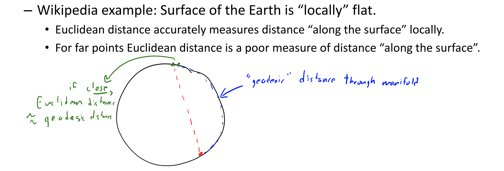

Like change of basis but instead of hand-picking the features, we learn them from data.
Part weights are a change of basis from to some . The canonical example is Principal Component Analysis (PCA)
PCA
PCA is parametric and does not provide unique global optimum.
Takes in a matrix and an input and outputs two matrices such that :
- is a (n,k) matrix. Each row is a set of features/part weights
- W is a (k,d) matrix. Each row is a part/factor/principle component
- We can think of as rotating data so that the slope is zero
- Approximation of one is
- Each can be thought of as a linear combination of all the factors
Assumptions:
- Assumes is centered (each column of has a mean of zero)
Use cases:
- Dimension reductionality: Effectively allows us to reduce the dimensionality of X if
- Actually, it only ever makes sense if
- Outlier detection: if PCA gives a poor approximation, could be an outlier
- Data visualization: to visualize high-dimensional objects
We minimize
If we do alternating minimization,
- Fix Z and optimize W:
- Fix W and optimize Z:
We converge to a local optimum which will be a global optimum if W and Z are randomly initialized (if you don’t pick a saddle point)
For large X, we can also just use SGD and cost per iteration is only
Choose by variance explained
How much of the variance can be explained by the choice of factors?
For a given , we compute the variance of the errors over the variable of each given
Uniqueness
Optimal is non-unique:
- Scaling problem: Can multiply any by any non-zero
- Rotation problem: Can rotate any within the span
- Label switching problem: Can switch any with any other
To help with uniqueness,
- Normalization: We ensure
- Orthogonality: We enforce for all
- Sequential fitting, we fit each in sequence
Multi-Dimensional Scaling
Gradient descent on points on a scatter point; try to make scatterplot distances match high-dimensional distances
No matrix needed! However, cannot be done using singular value decomposition (a matrix factoring technique). We need gradient descent.
- Non convex
- Sensitive to initialization
- Unfortunately, MDS often does not work well in practice; MDS tends to “crowd/squash” all the data points together like PCA.
t-SNE
t-Distributed Stochastic Neighbour Embedding
However, using Euclidean (L2-norm) may not be a great representation of data that lives on low-dimensional manifolds. In these cases, Euclidean distances make sense “locally” but Euclidean distances may not make sense “globally”.

t-SNE is actually a special case of Multi-Dimensional Scaling. The key idea is to focus on distance to “neighbours”, allowing gaps between distances to grow
Word2Vec
Each word is represented by a vector of real numbers
Trained using a masking technique.
- Takes sentence fragments and hides/masks a middle word
- Train so that of hidden word is similar to of surrounding words
Gradient descent on for